MEN
Calculadoras de Fabricación — Herramientas de taller
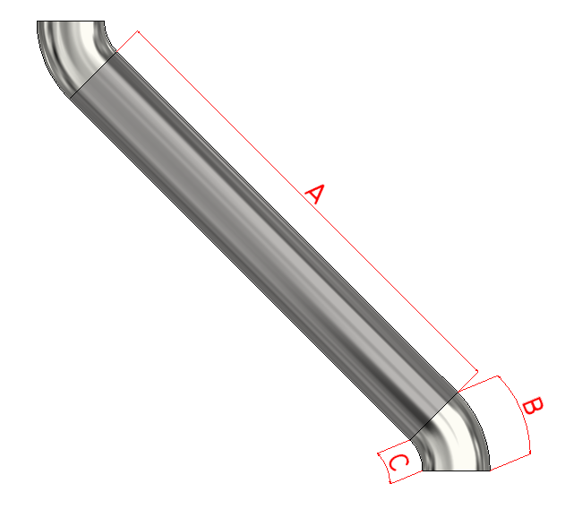
Bayoneta de tubería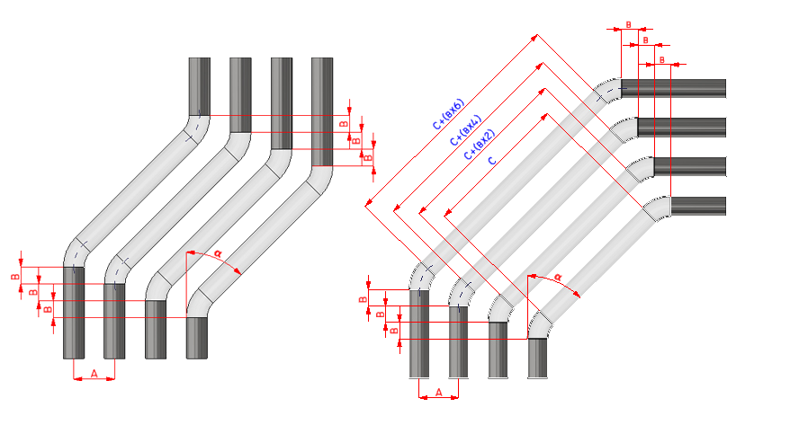
Bayonetas paralelas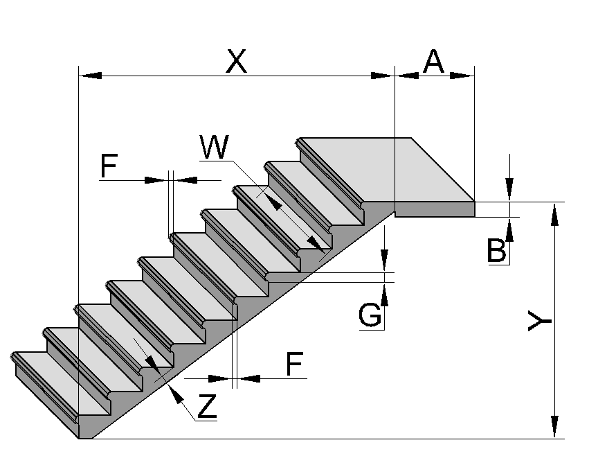
Calculo escaleras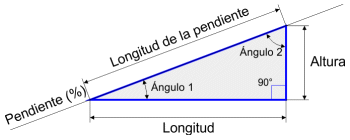
Calculo pendientes Codo degradado
Codo degradado
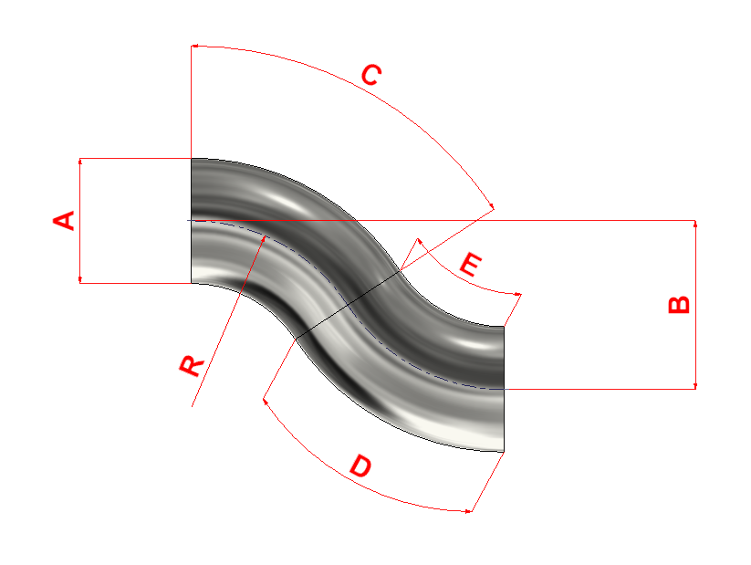
Offset de codo Codo a gajos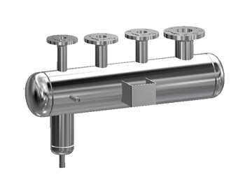
Calculo diametro colector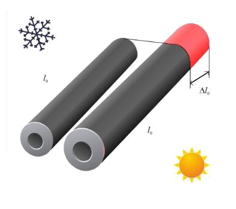
Dilatacion tuberia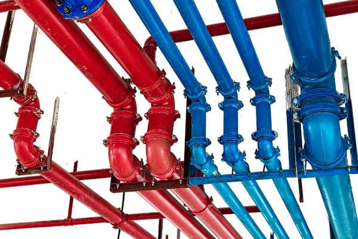
Separacion tuberias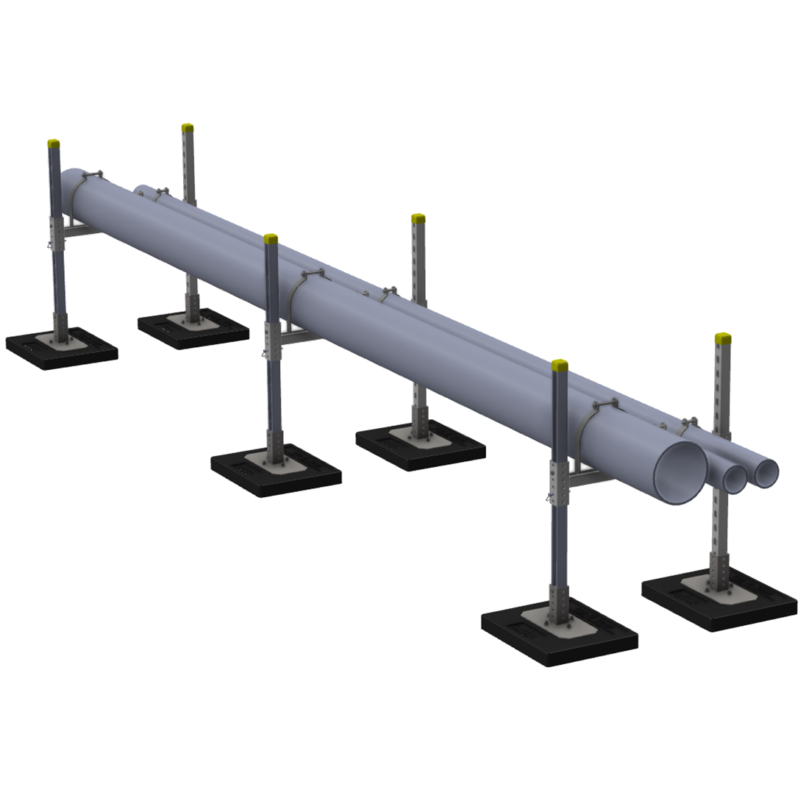
Distancia soporte tuberia metalica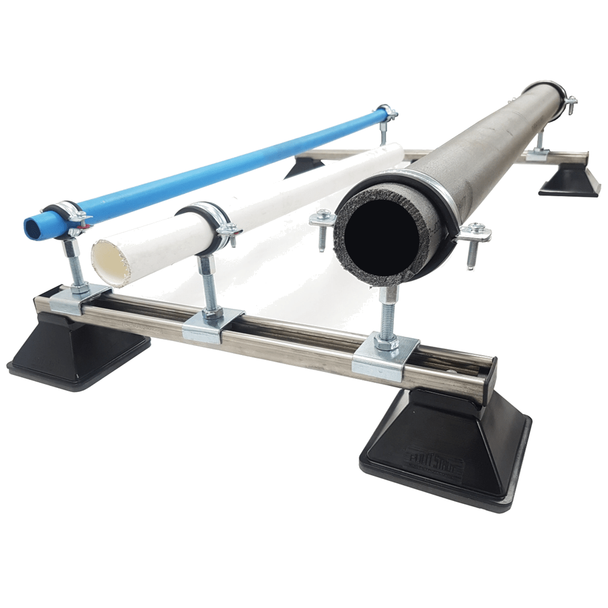
Distancia soporte tuberia no metalica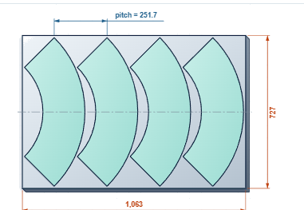
Anidado de aro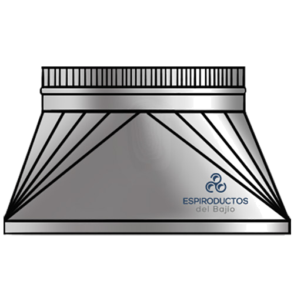
Transicion Desarrollo de conos 1
Desarrollo de cono 2
Desarrollo de conos 1
Desarrollo de cono 2
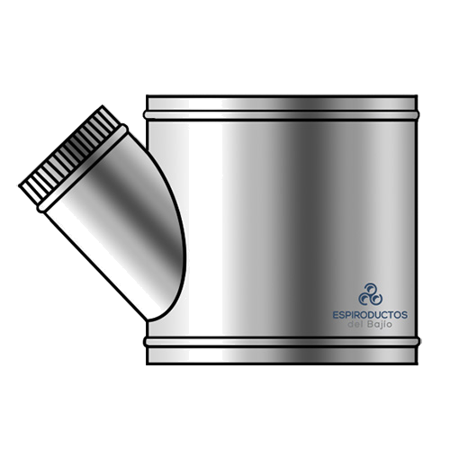
Injertos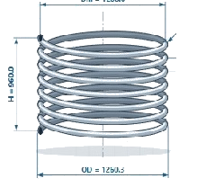
Longitud bobina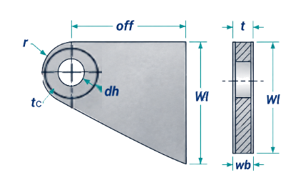
Oreja de carga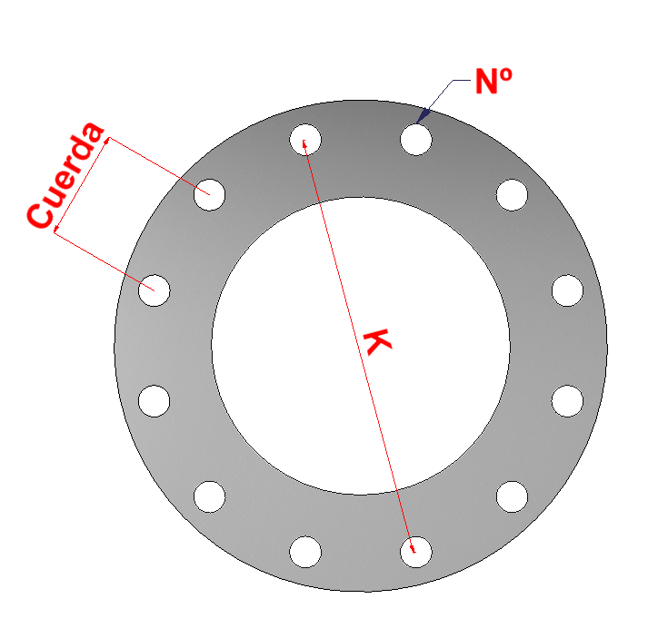
Taladro en círculo Solo PC P&ID, isometrico, etc
Solo PC P&ID, isometrico, etc